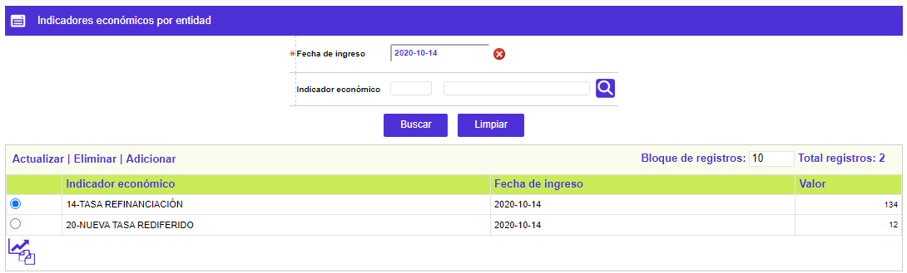
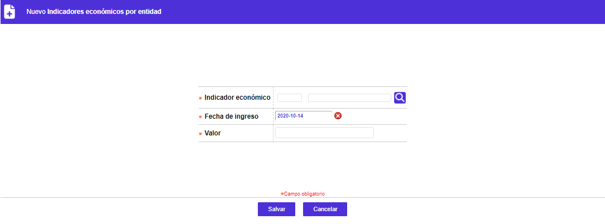
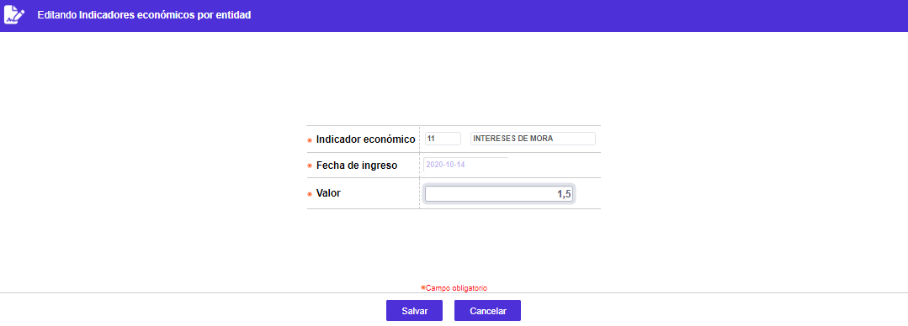

|
Indicadores económicos entidad |
Mediante esta función se habilita la consulta y mantenimiento del valor absoluto, para cada uno de los indicadores económicos "oficiales" vigentes para o a partir de la fecha señalada y definidos por la entidad para ser utilizados para el cálculo del beneficio o margen a obtener por los créditos utilizados por los clientes. Al igual que los valores de las tasas de cambio, es necesario realizar periódicamente, la actualización de los indicadores básicos para el correcto funcionamiento del sistema.
El formulario contiene las opciones: Actualizar, Eliminar y Adicionar. Adicionalmente cuenta con un filtro de búsqueda y el botón Indicadores económicos de ayer en la parte inferior, que permite replicar los valores definidos el día anterior, si existen, facilitando de esta manera la actualización de los mismos.

|
Fecha de ingreso |
Campo en el que mediante la funcionalidad de un calendario se selecciona la fecha para la que se requiere realizar la consulta. Por defecto muestra la fecha actual del sistema. |
|
Indicador económico |
Campo en el que se puede digitar o seleccionar de la lista de valores poblada a través de la opción tipos de tasas e indicadores el código asignado al indicador económico a consultar. |
Adicionar: Si el usuario invoca la opción Adicionar se despliega un formulario con los siguientes campos::

|
Indicador económico |
Campo obligatorio en el que se puede digitar o seleccionar de la lista de valores poblada a través de la opción tipos de tasas e indicadores el código asignado al indicador económico a incluir. Al ingresar un código se valida contra la lista; aquellos que no aparecen en la lista, pueden corresponder a indicadores que son el resultado de cálculos basados en algunas de estas cifras. |
|
Fecha de ingreso |
Campo obligatorio que, mediante la funcionalidad de un calendario, permite definir la fecha a partir de la cual la entidad determinar el valor de asociado a dicho indicador. Por integridad de los cálculos solo permite definirle la misma fecha del día actual de proceso. |
|
Valor |
Campo numérico obligatorio, que en un máximo de seis enteros y seis decimales permite registrar el valor absoluto válido para cada indicador económico tipo base |
Actualizar: Si el usuario invoca la opción Actualizar se despliega un nuevo formulario en el cual el único campo modificable es: Valor.

Copiar indicadores económicos de ayer: Utilitario que permite replicar los valores para los diferentes indicadores económicos definidos el día anterior, si existen, y solamente modificar aquellos cuyos valores hayan variado.